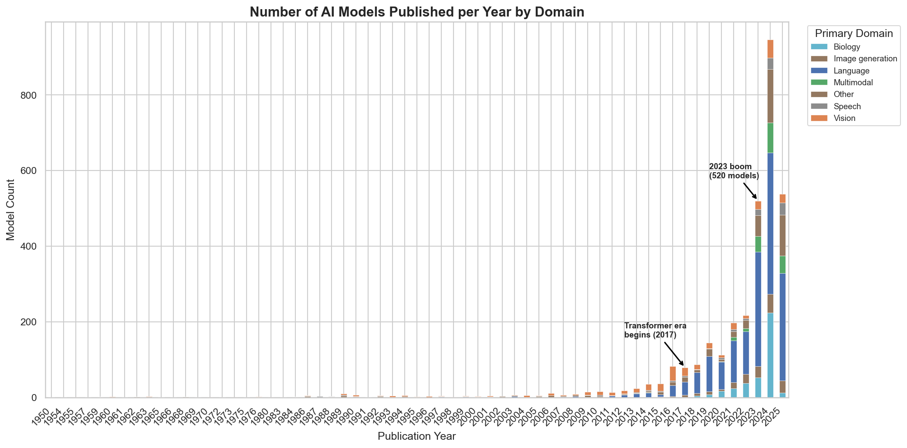
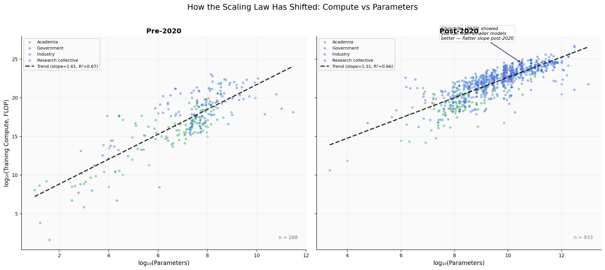
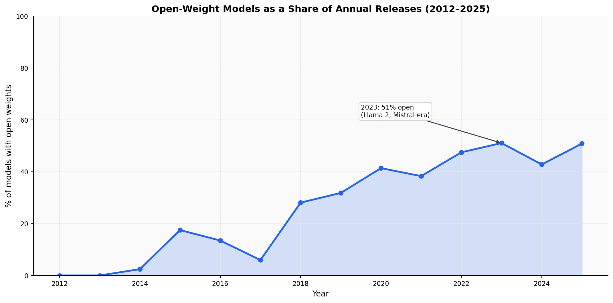
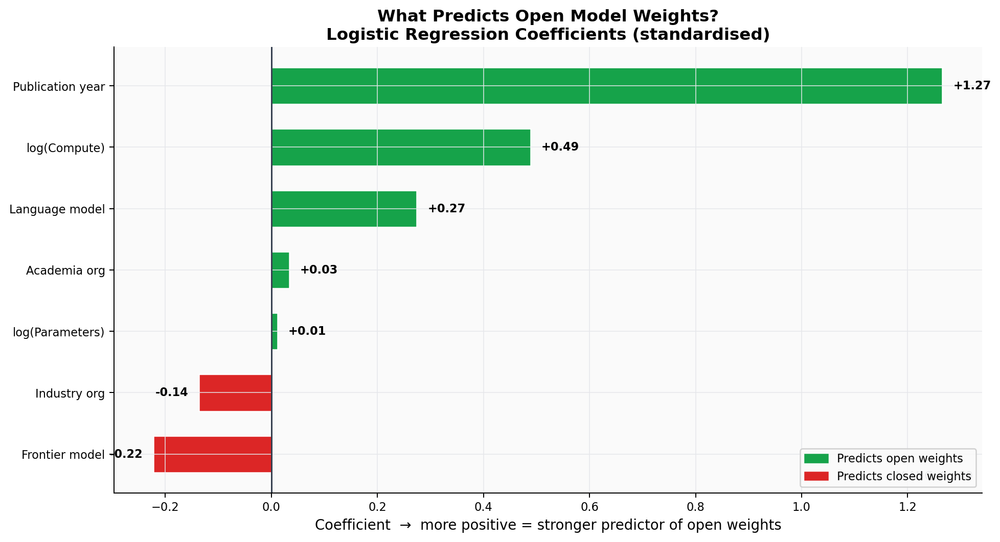
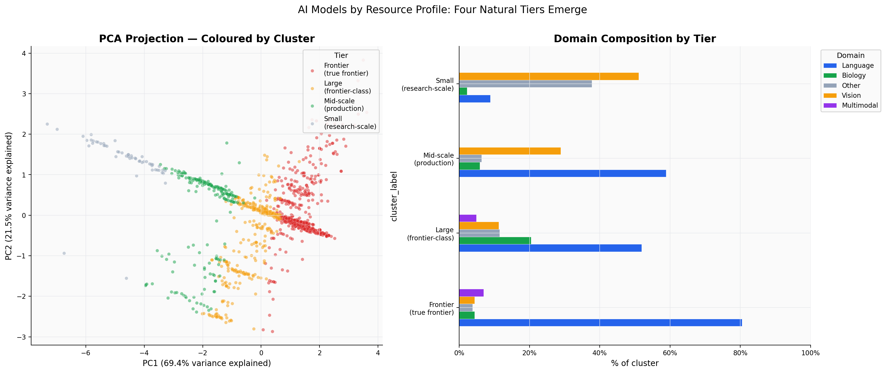
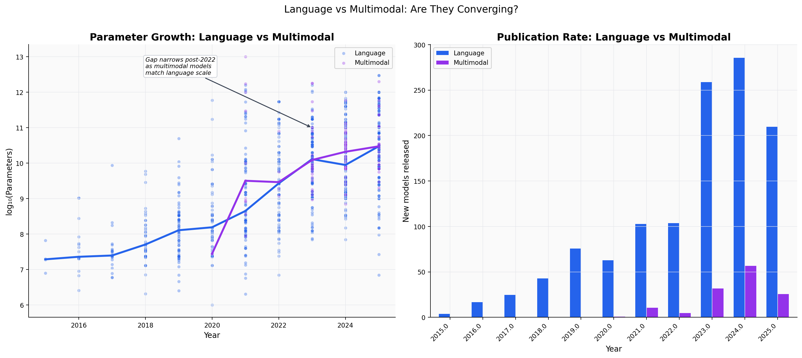
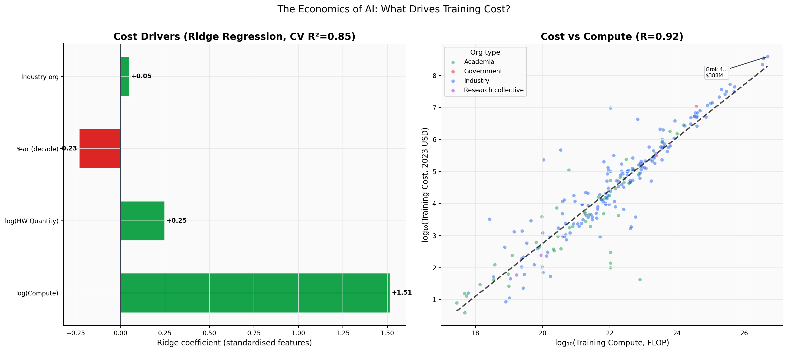
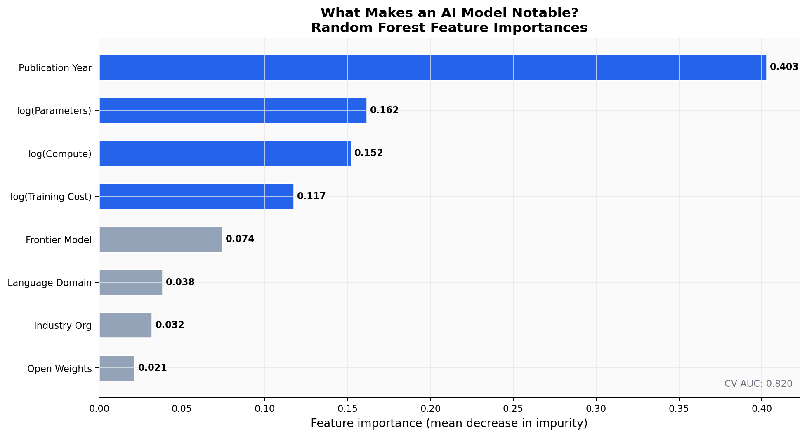
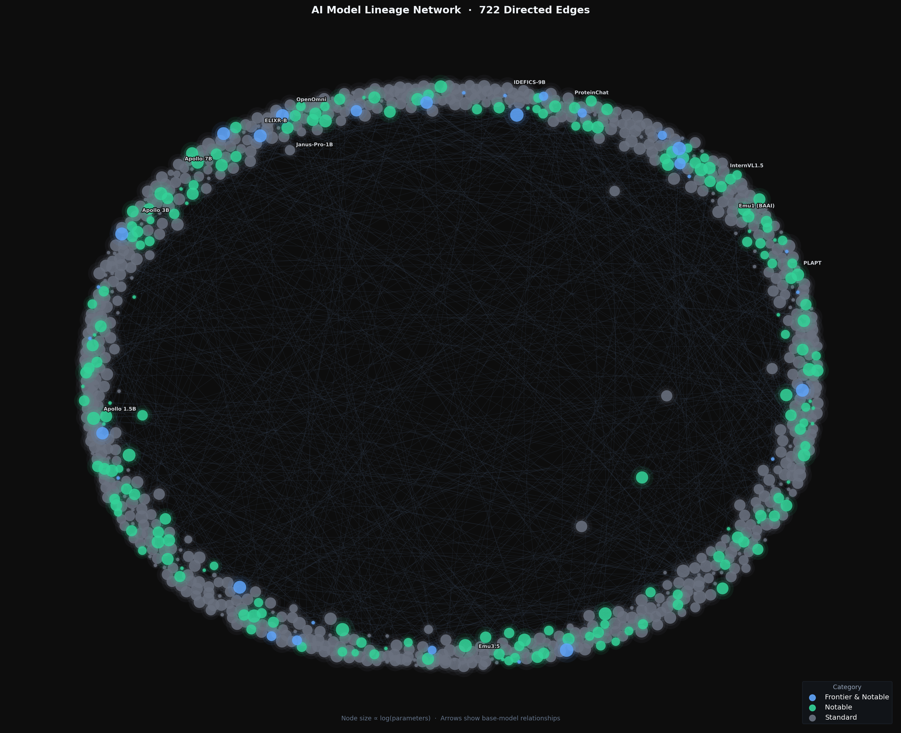

Introduction
In 2024, researchers published 944 AI models, roughly three per day. That is more than in the entire period from 1950 to 2018 combined. The pace at which this field moves makes it almost impossible to keep up anecdotally, which is exactly why data matters.
This analysis is built on the Epoch AI Models dataset, a systematically curated record of over 3,300 AI systems spanning seven decades, from ENIAC-era perceptrons to frontier large language models. Every entry includes training compute, parameter counts, publishing organization, country of origin, training cost, and whether the weights were made publicly available.
Three questions sit at the center of this story. Who is building the frontier of AI, and is that power concentrating or spreading? What does it cost to train a competitive model, and how has that changed? And who gets access to the results? The open vs. closed debate is not just philosophical; it determines who can build on top of these systems and who cannot.
The dataset required substantial cleaning before analysis: 15 duplicate records were removed, multi-valued fields (Domain, Country, Organization) were split into primary values for grouping, 11 numeric columns were coerced from mixed-type strings, and three supplementary files were merged to add frontier, notable, and large-scale flags. Log-transformed versions of Parameters and Training Compute were derived given the extreme right skew (parameters span 10 to 10¹⁴). The final cleaned dataset contains 3,305 rows and 76 columns. Full methodology is documented in the data cleaning report.
The Exponential Surge
Research Question 1 How has the volume and domain composition of AI model publications evolved from 1950 to 2025, and has the relationship between model scale and training compute remained consistent over time?
The history of AI is not a smooth curve; it is a series of inflection points, each triggered by a methodological breakthrough that unlocked a new order of scale. The dataset makes this visible in a way that narrative accounts often obscure.
From 1950 to 2016, the field produced a few hundred models in total. Then, in 2017, the Transformer architecture arrived. Model publication counts jumped sharply and have not stopped since. By 2023, the year ChatGPT normalized public interaction with large language models, the annual count reached 521. In 2024, it nearly doubled again to 944.
The surge is not uniform across domains. Biology, driven largely by protein structure prediction following AlphaFold, emerged as a serious second tier. Vision models scaled steadily. Multimodal systems, which barely existed as a category before 2020, now represent a meaningful share of new releases. The field has not just grown; it has diversified.

When Scaling Laws Broke Down
Supporting analysis for Research Question 1 — the scaling dimension.
For most of the deep learning era, there was a simple rule: more parameters required proportionally more compute to train. The relationship between model size and training FLOPs followed a predictable power law, and the implication was clear: if you wanted a better model, you needed a bigger model trained on more compute.
That rule held until around 2020. Then it started to crack.

The 2022 Chinchilla paper by DeepMind was the clearest articulation of what the data had been showing: GPT-3-scale models were significantly undertrained relative to their parameter counts. The efficient frontier was not a single line; it was a region, and most large models were nowhere near it.
The post-2020 scatter tells that story. The slope between log(compute) and log(parameters) flattens noticeably, and the spread widens. Academia, constrained by smaller compute budgets, tracks the efficient frontier more tightly. Industry, with room to experiment, produces both the most compute-hungry models and some of the most efficient ones.
The Geography of Intelligence
Research Question 2 Which countries are producing AI models, and is geographic concentration at the frontier increasing or spreading over time?
If you look at model counts alone, the story seems simple: the United States dominates, followed by China, the United Kingdom, South Korea, Canada, and France. But model counts are a blunt instrument. The more interesting question is what kind of models each country produces, and whether geographic concentration is increasing or decreasing over time.
The US-China gap is real but narrowing. In 2018, US organizations were responsible for roughly 60% of models in the dataset. By 2024, that share had dropped as Chinese labs including Alibaba, ByteDance, DeepSeek, and Baidu, which emerged as serious contributors, particularly in the Language and Vision domains. The UK punches above its weight in Biology (DeepMind's AlphaFold lineage). South Korea's strength is concentrated in Language and Multimodal systems.

The concentration question has a more ambiguous answer than the headlines suggest. Among all models, the US share fell from roughly 60% in 2018 to 38% in 2024 as other countries scaled output. Among frontier-class models specifically, however, the picture is far more concentrated: the United States accounts for two-thirds of all frontier releases, with the UK (7%) and China (4%) trailing significantly. Everything else has democratized. The barrier to entry for publishing a Language model has dropped dramatically; the barrier to training a frontier one has not.
A chi-squared test of independence on the top-10 country by top-10 domain contingency table (n = 2,845) confirms that the relationship between a model's country of origin and its research domain is statistically significant (χ²(81) = 1,297, p < 0.001). The effect size (Cramér’s V = 0.23) is modest but meaningful: country of origin is a real predictor of domain specialization, not just a reflection of overall output volume. China is notably overrepresented in Biology and Vision relative to its share of Language models; the United States dominates Language but produces a more balanced domain portfolio overall.
Open vs. Closed: The Access Divide
Research Question 3 What factors most strongly predict whether a model releases its weights publicly, and how has the open vs. closed balance shifted from 2012 to 2025?
The question of whether AI model weights should be publicly released is one of the most contested in the field. The arguments are familiar: open weights enable research, accelerate innovation, and democratize access; closed weights protect commercial interests, allow for safer deployment, and prevent misuse. What does the data actually show?

The open-source wave of 2023, driven by Llama 2, Mistral, and a wave of derivatives, was real and statistically significant. It did not sustain beyond 2023: the open proportion declined to 43% in 2024 before partially recovering to 51% in 2025. Total model counts continued to surge throughout this period, meaning the closed-model share, dominated by industry labs, has grown substantially in absolute terms.

The logistic regression results are instructive. Being an industry organization is the single strongest predictor of closed weights, stronger than model size, compute, or domain. Academic organizations are significantly more likely to release openly. Frontier status is a moderate negative predictor: the models most worth having are the ones least likely to be shared.
Four Tiers of AI
Research Question 4 Do AI models cluster into distinct resource tiers, or do they exist on a smooth spectrum? How does domain composition differ across tiers, and what factors best predict a model's notable impact on the field?
There is a common assumption that AI models exist on a smooth spectrum from small to large. The data suggests otherwise. When you apply K-means clustering to log-transformed resource profiles (parameters, compute, dataset size, and hardware quantity), four distinct tiers emerge with surprisingly clean boundaries.

The tiers are intuitive once you see them. Research-scale models, the kind a well-funded academic lab can train, cluster tightly at the low end. Production-scale models, the kind deployed in real products, form a middle band. Frontier-class models occupy their own stratum, and a small cohort of true frontier models sit at an extreme that looks almost disconnected from the rest.
The domain composition is telling. Biology models are almost entirely in the research-scale and mid-scale tiers. AlphaFold notwithstanding, the field does not require GPT-scale compute budgets. Multimodal models, by contrast, are disproportionately represented at the top two tiers, reflecting the added cost of processing multiple data modalities simultaneously.
Language vs. Multimodal: Converging at the Top
Supplementary analysis: domain convergence trends over time.
Multimodal models, systems that process text alongside images, audio, video, or other modalities, have been the defining architectural trend of the 2022–2025 period. GPT-4V, Gemini, Claude 3, and their contemporaries represent a qualitative shift from the language-only era. The question is whether multimodal models are following the same scaling trajectory as language models, or charting a different path.

The convergence story is real but partial. At the median, multimodal models have rapidly closed the parameter gap with language models; by 2024, the distributions overlap substantially. At the top end, however, the largest language models still eclipse the largest multimodal ones in raw parameter count. Adding modalities turns out to require more compute per parameter, not just more parameters.
Multimodal models are not replacing language models. They are consuming them, using a language backbone and adding modality-specific components on top. The two trajectories are converging because multimodal systems are increasingly built from language models.
The publication rate chart tells a different story: multimodal releases have accelerated faster than language ones in relative terms. The field's attention has shifted, even if the absolute parameter counts have not yet caught up.
The Price of Intelligence
Supplementary analysis: economics of model training.
Training cost is the least-reported column in the dataset. Only 7% of models include a cost figure, which is itself a data point. Labs are not eager to publish how much they spend. But for the models where cost is known, the numbers tell a clear and sobering story.

Compute is, by a wide margin, the strongest predictor of training cost. This is expected: more FLOPs means more GPU-hours means higher bills. But the relationship is not deterministic. Hardware quantity and organization type both add independent explanatory power. Industry organizations spend more for a given compute budget than academic ones, consistent with the hypothesis that they are training on proprietary infrastructure with different cost structures than academic compute grants.
The median training cost for models with known costs is around $27,000, accessible to a serious research group. The 95th percentile exceeds $10 million. The top of the distribution, anchored by GPT-4-scale systems, approaches $400 million. That range spans five orders of magnitude. The practical implication is clear: fewer organizations can credibly train a competitive model today than could a decade ago.
What Actually Makes a Model Notable?
Supporting analysis for Research Question 4 — predictors of model impact.
The dataset includes a curated subset of 981 notable models, selected by Epoch AI based on citation impact, historical significance, and research influence. This raises a question: is notability just a proxy for size, or do other factors matter independently?

The random forest results challenge the assumption that bigger is always more notable. Parameter count is a predictor, but it is not the dominant one. Publication year is the single strongest feature, which reflects the expansion of the dataset itself more than anything about the models. More interestingly, open weights and frontier status both contribute independently, suggesting that models which shaped the field are disproportionately the ones that were released publicly.
The models that changed AI were not always the largest. BERT (340M parameters, 2018) catalyzed a decade of transfer learning research. AlphaFold 2 (93M parameters) solved protein folding. GPT-2 (1.5B parameters) sparked the open-source debate before GPT-3 existed. Notability is about what a model enables, not just what it measures.
The Family Tree
One of the more underappreciated patterns in the dataset is the lineage structure. The Base model column records which existing model a given system was built on, through fine-tuning, instruction-tuning, or architectural extension. This creates a directed network with 3,305 nodes and 722 edges.

The network is highly centralized around a small number of "parent" models. The Llama 2 family alone (7B, 13B, 70B) spawned 55 documented derivatives in this dataset. Mistral 7B, released in September 2023, generated 14 within months. This is the open-source flywheel in action: a publicly released model becomes a platform that multiplies research productivity for the entire community.
Closed models appear in the network as isolated nodes or small clusters. They receive no derivatives, at least none that can be traced. This is the structural consequence of the access divide: open models compound in value; closed ones do not.
Conclusion
Seventy-five years of AI development, compressed into a single dataset, tells a story more nuanced than the headlines suggest. The field has not just grown; it has stratified. There are now four resource tiers, a widening gap between open and closed systems, and a geographic concentration at the frontier that coexists with genuine democratization at the mid-scale.
The efficiency story is real: post-Chinchilla models do more with less compute per parameter than their predecessors. But efficiency gains have not made the frontier cheaper to reach. They have made it possible for the frontier to advance faster, requiring even more compute to stay current.
The open-source wave of 2023 was meaningful. The model lineage network shows, concretely, how Llama 2 and Mistral generated dozens of derivatives that would otherwise not exist. Whether that wave continues, or whether proprietary models reestablish dominance at the frontier, is probably the most consequential open question in AI policy right now.
The data cannot answer that question. But it can make the stakes legible.
Dataset & Methods
Data: Epoch AI, "Data on AI Models," 2026. Available at epoch.ai/data/ai-models. Licensed under CC-BY 4.0. The cleaned dataset contains 3,305 models and 76 columns after deduplication, type coercion, primary-value extraction, and auxiliary-dataset merging. All statistical analyses use scikit-learn 1.6 and scipy 1.15. Visualizations generated with matplotlib 3.10 and seaborn 0.13. Network analysis via Gephi 0.10.